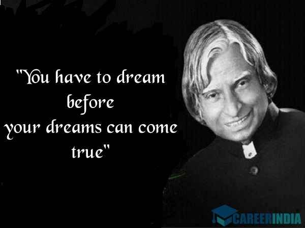
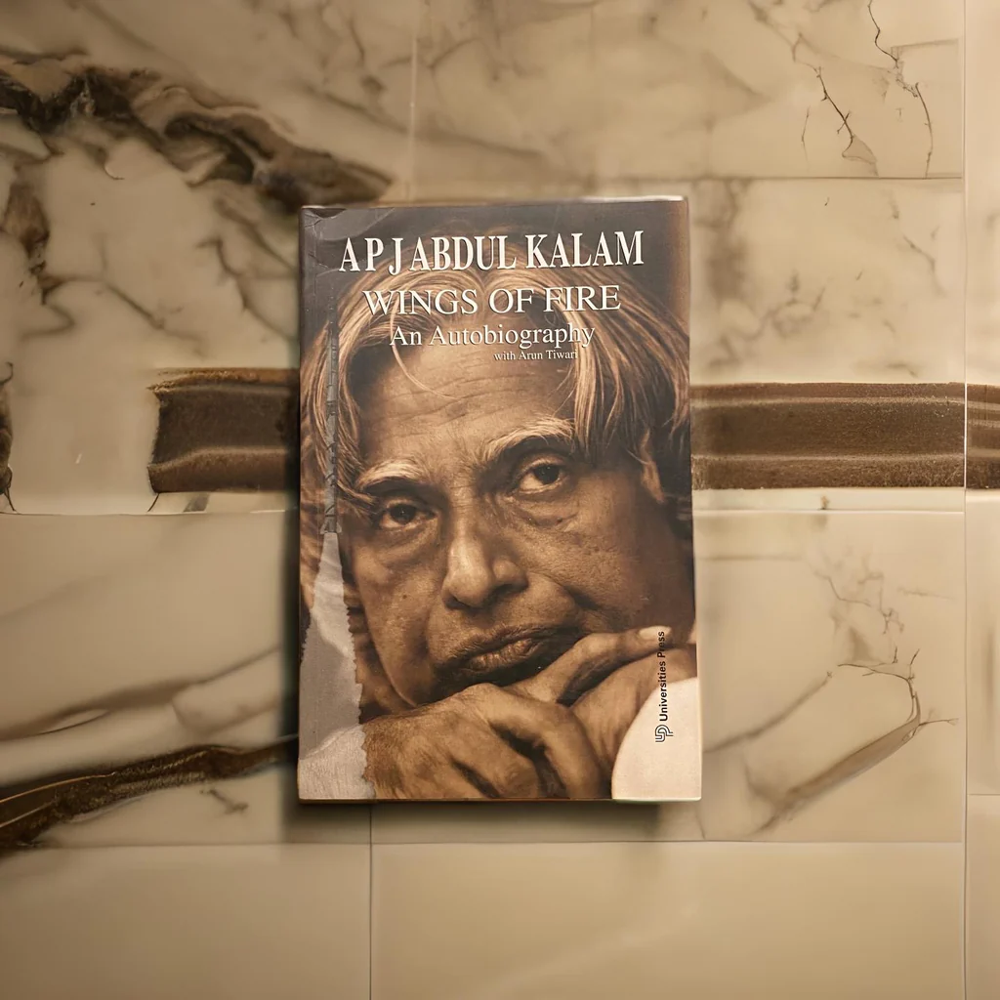
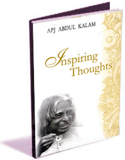
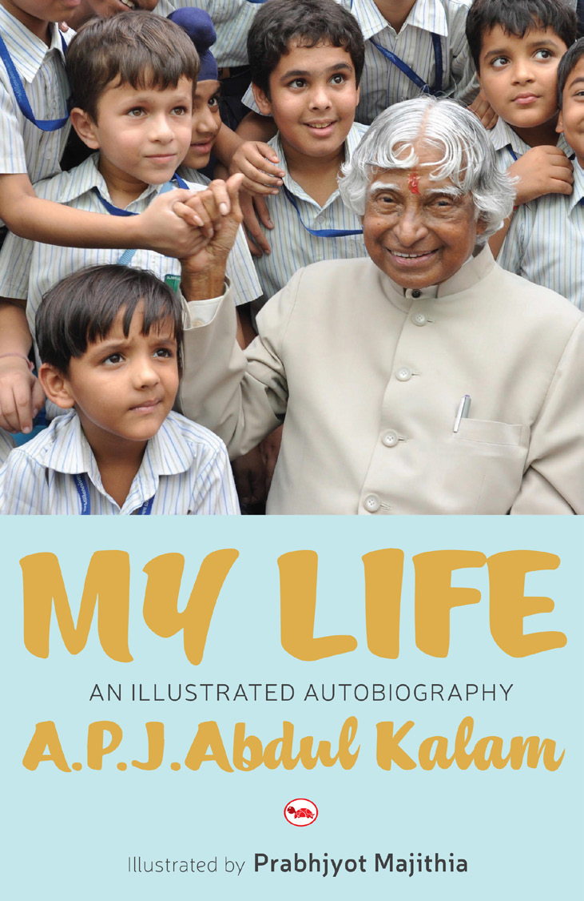

Biography
Great personalities are not born every day; they are born once in a century and are remembered for millennials to come. One such great personality that we will always be proud of is Dr. APJ Abdul Kalam. His full name was Avul Pakir Jainulabdeen Abdul Kalam, born in Rameswaram of Madras Presidency on 15th October 1931 and died on July 27, 2015, Shillong. He was an Indian Scientist and also a politician leader, who later became the 11th President of India. He played an important role in the development of India’s missile and nuclear weapons program. Dr. A P J Abdul Kalam was born to a poor Tamil Muslim family. He lived with his family in the temple city of Tamilnadu, Rameswaram, where his father, Jainulabdeen, had a boat and was an imam of a local mosque. At the same time, his mother, Ashiamma, was a housewife. Kalam had four brothers and one sister in his family, from which he was the youngest. Kalam's ancestors were wealthy traders and landowners and had vast land and property tracts. But with time, their business of ferrying pilgrims and trading groceries suffered huge losses due to the Pamban Bridge's opening. As a result, Kalam's family had become inadequate and struggled hard to make a living. At a tender age, Kalam had to sell newspapers to supplement his family income.

'The Turning Points' is a sequel to 'Wings of Fire' an internationally acclaimed book showcasing the achievements and dearths in the life of Former Indian President and Nuclear Scientist Dr. A P J Abdul Kalam. It revolves around Dr. Kalam's mission of India 2020 and the efforts imperative to achieve it.

The book, 'My Journey: Transforming Dreams into Actions' is the life story of Dr. APJ Abdul Kalam, India's famous scientist and former President. Written with a powerful narrative style laden with significant experiences, Dr. Kalam has filled this book with the details that matter.

The 'Wings of Fire' is one such autobiography by visionary scientist Dr. APJ Abdul Kalam, who from very humble beginnings rose to be the President of India. The book is full of insights, personal moments and life experiences of Dr. Kalam.

This Book show the power of hard work and perseverance, two of Kalam's most important values. "If you want to shine like a sun, first burn like a sun." "You have to dream before your dreams can come true." "All of us do not have equal talent.

In My Life, Kalam writes his life story starting from his days growing up at Rameswaram; about working on India's space and missile programmes; his years as the eleventh President of India; and about his life thereafter.